前言
2021 年，测试平台如雨后春笋般冒了出来，我就是其中一员，写了一款 pytest 内核测试平台，在公司落地。分享出来后，有同学觉得挺不错，希望能开源，本着“公司代码不要传到网上去，以免引起不必要麻烦”的原则，只能在家从头写一个，边重新梳理代码边温习巩固知识点，以学习交流为目的，定义为“学习版”。
功能展示
登录

接口自动化
接口自动化–Dashboard：

接口自动化–环境变量：
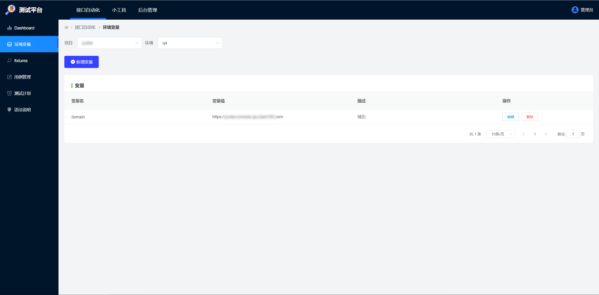
接口自动化–fixtures：

接口自动化–用例管理：

接口自动化–用例管理–编辑用例：

接口自动化–测试计划：
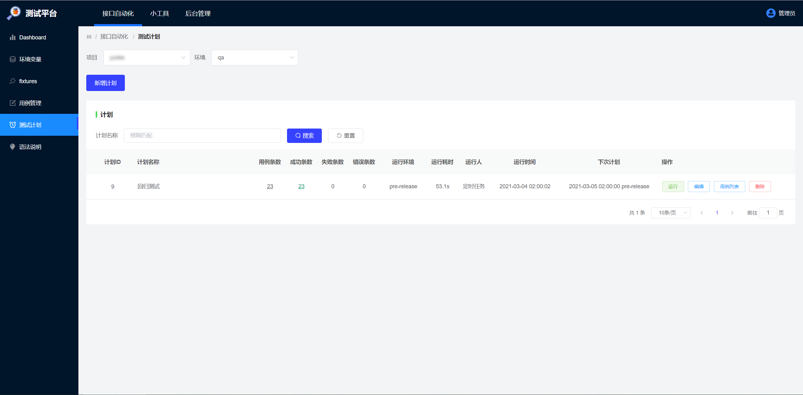
接口自动化–语法说明：
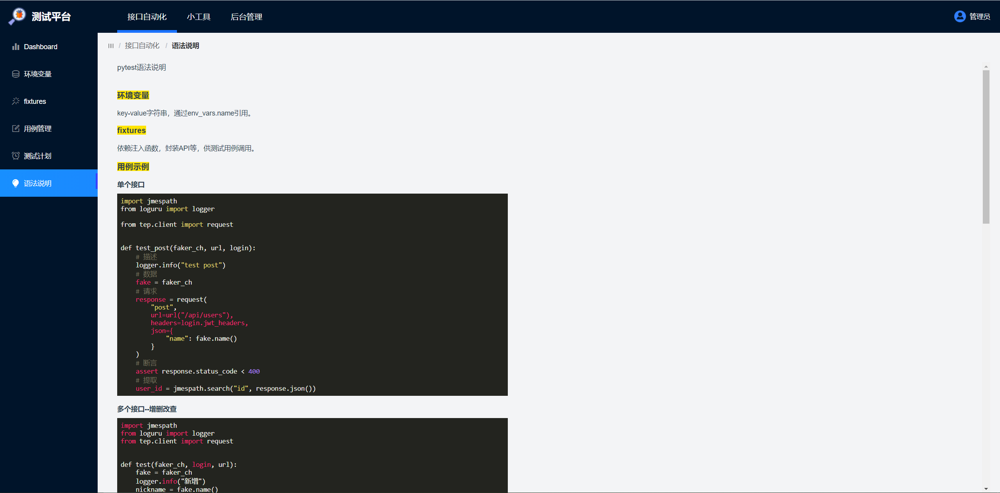
小工具
小工具–共享脚本：
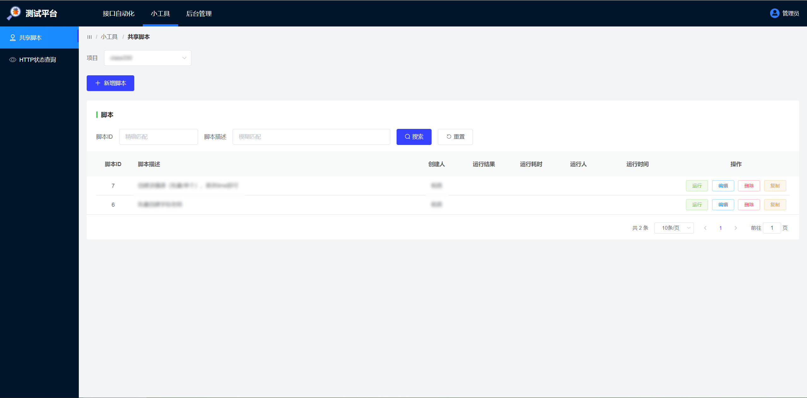
小工具–HTTP 状态查询：

后台管理
后台管理–用户管理
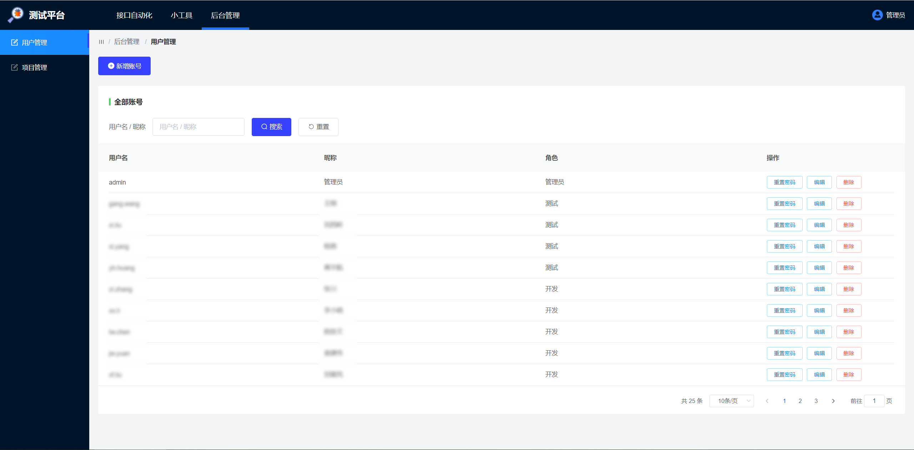
后台管理–项目管理

本文开发内容
- 登录，登出
- 首页，修改密码，个人信息
- 后台管理，用户管理
- JWT 认证
本文先打个基础，既是测试平台基本结构，也可以作为 CMS 基础框架，定制开发各种小型项目。
技术栈
- Node.js 12.16.3
- Vue 4.5.11
- Python 3.8
- Django 3.1.3
- Django REST framework 3.12.2
- SQLite 3
IDE 编辑器推荐 PyCharm 旗舰版，既能写 Django 也能写 Vue 项目。数据库使用 Django 自带 SQLite ，省去安装 MySQL 和 Navicat/Workbench 麻烦，轻量级开发。SQLiteStudio 为 SQLite 数据库可视化工具，只需要下载即可，无需安装，解压就用：：

由于会用到models.JSONField，SQLite 默认不兼容，所以需要下载sqlite3.dll文件替换下：
https://www.sqlite.org/download.html
根据 Python 版本选择，比如我的 windows 安装的 Python38-32，下载了sqlite-dll-win32-x86-3340100.zip这个软件包，解压后将D:\Program Files (x86)\Python38-32\DLLs\sqlite3.dll替换。
创建 Vue 项目
设置npm淘宝镜像：
npm config set registry https://registry.npm.taobao.org
安装Vue CLI：
npm install -g @vue/cli
创建teprunner-frontend项目：
vue create teprunner-frontend
项目名字请随意。
默认选项点击回车进行创建：
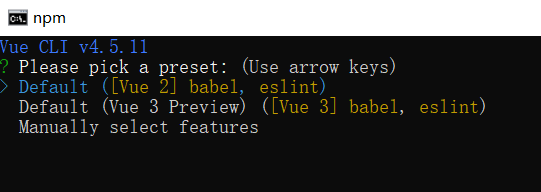
编写 Vue 代码
添加静态资源：

包括 css 样式、字体样式、图标、logo。
推荐一个图标下载网站：https://www.easyicon.net/。
编辑package.json，安装项目所需依赖：

axios用于异步请求，发送http给后端。element-ui为饿了么开源前端框架，简化了从头写 html 麻烦，高度复用，统一风格。vue-router提供了路由跳转，在上个时代，路由是在后端来控制的，把页面渲染后返回给前端直接展示，前后端分离后，后端只负责返回数据，把控制权交给前端。
devDependencies是写代码用到的依赖，这里把eslint和prettier标出来了，它们是用来做代码静态检查的，配置后能给与代码规范提示，帮你写出更漂亮的代码，同样是在package.json文件编辑：
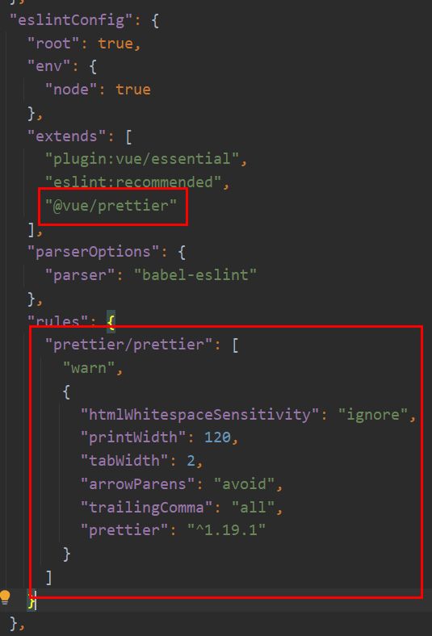
接着执行npm install进行安装。有可能会出现下图提示：

执行npm audit fix就修复好了：
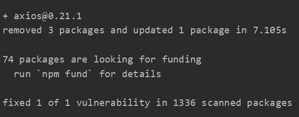
新建vue.config.js文件，添加 Vue 项目配置：

args[0].title给网页设置了浏览器 title。proxy指定了后端接口根路径为/api，后端服务器访问地址为http://127.0.0.1:8000/，这是 Django 启动后默认本地域名和端口。element-ui默认页面是会出现滚动条的，在登录页会显得很丑，需要在public/index.html加上样式：

Vue 程序执行入口是main.js，把需要初始化加载的代码写在这里：

app 会挂载到index.html文件中div：

这是整个 Vue 项目唯一的html文件，其他组件都是挂载到这个div下面的。其中有个App.vue：
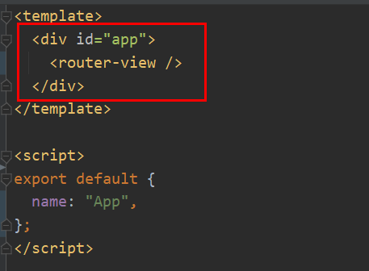
它叫做根组件，router-view是一块区域，用来展示路由匹配到的组件，也就是说所有路由匹配到的组件都会通过App.vue根组件来展示。路由配置在router/index.js文件中编辑：
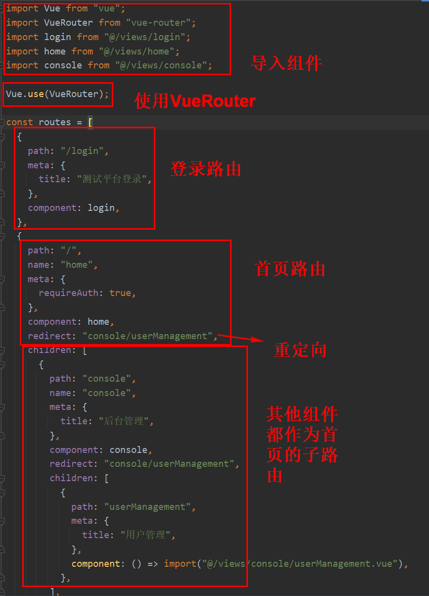
第一层路由是/login登录和/首页，首页只有菜单，没有具体内容，显示没有意义，所以重定向到了后台管理的用户管理。第二层路由是具体的功能模块，作为子路由放在首页路由下，比如后台管理。后台管理的子模块用户管理也放到了后台管理的子路由，根据url访问路径定义父子路由关系。
为了在未登录的情况下，不允许访问首页，需要再加上访问拦截：
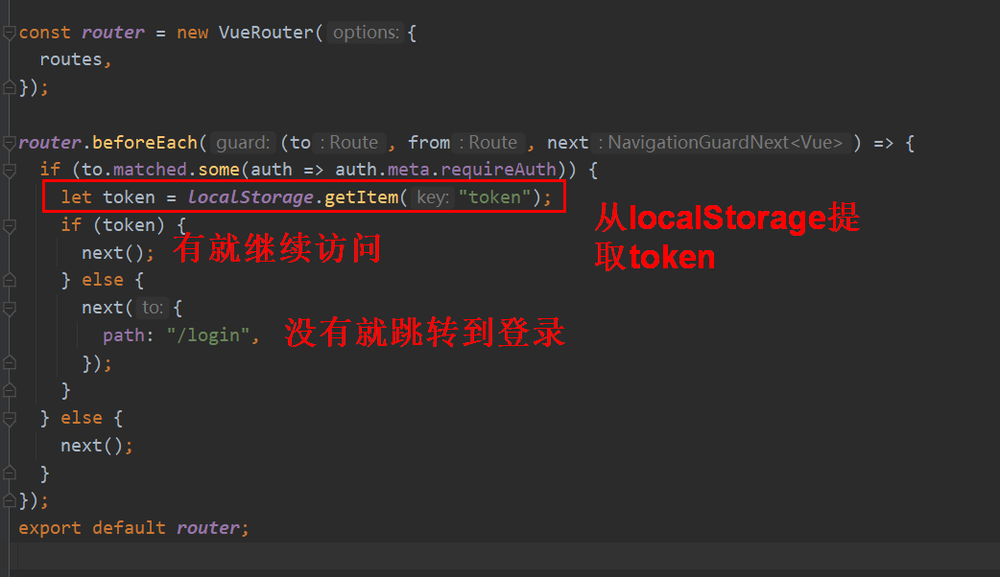
同时添加了meta.requireAuth，用来设置哪些路由需要拦截，这里把首页设置为True：

登录就不需要了。路由配置完成了，接着编写页面代码，Vue 项目的页面只有index.html一个html文件，其他页面都是放在views文件夹下，新建一个views/login/index.vue文件：

使用el-form标签添加用户名、密码、忘记密码和登录按钮。:model给表单绑定了数据对象，分别填充到form.username、form.password、form.rememberMe：

:rules定义了表单规则，比如是否必填：
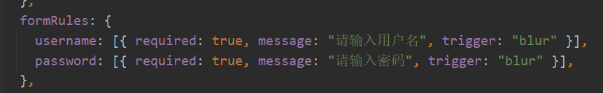
登录没有做用户名和密码校验，新增用户时才会做校验。
在创建登录界面时，从localStorage中移除userInfo和token，登录信息保留 7 天：
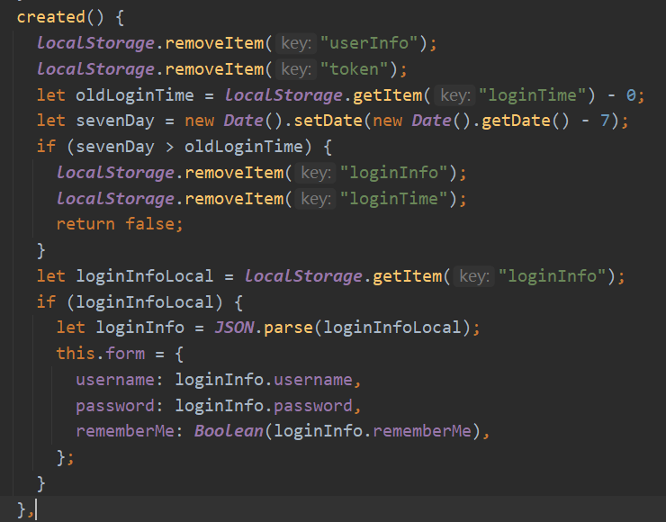
点击登录按钮会调用login方法，发起登录请求：
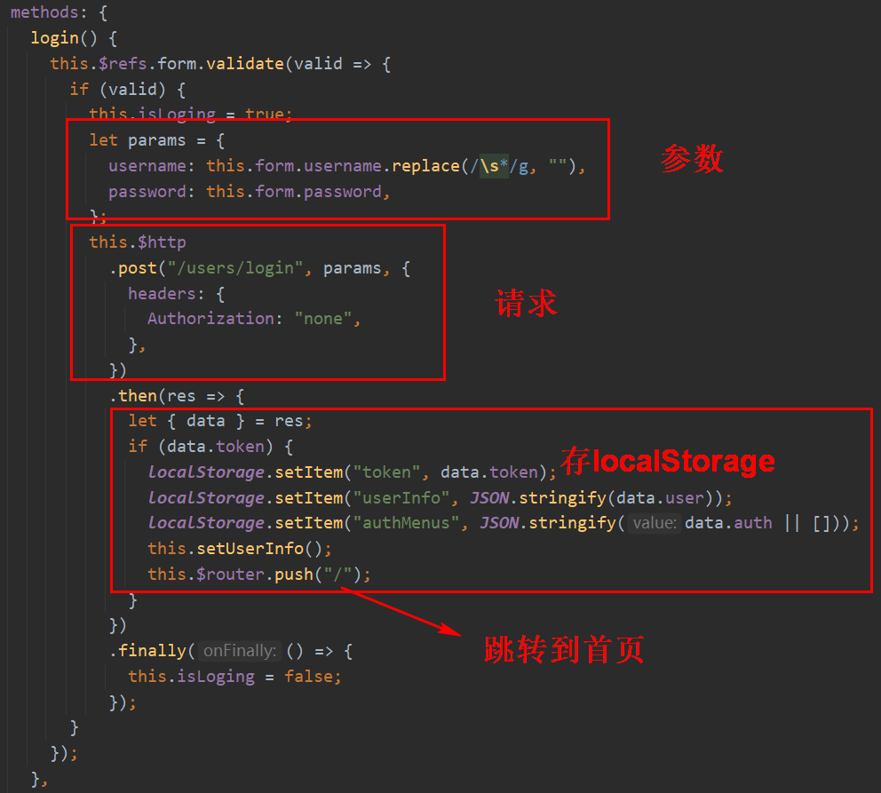
新建views/home/index.vue，编写首页代码：

<router-link>提供了链接跳转，左上角 logo 跳转到首页，顶部导航栏根据后端返回的authList权限菜单进行显示，因为后台管理只有管理员才能访问。接着编写右上角区域代码：
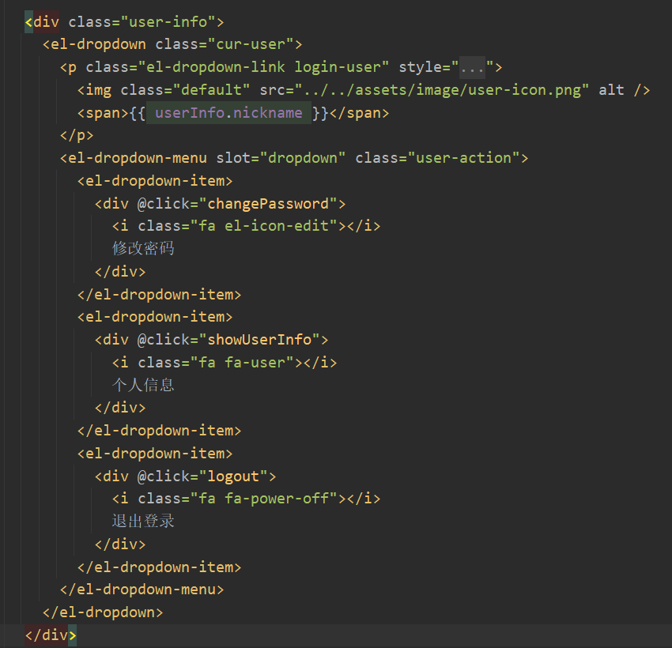
包括修改密码、个人信息和退出登录，为了简单一点，没有弄头像了。修改密码使用el-dialog做了个弹出框：
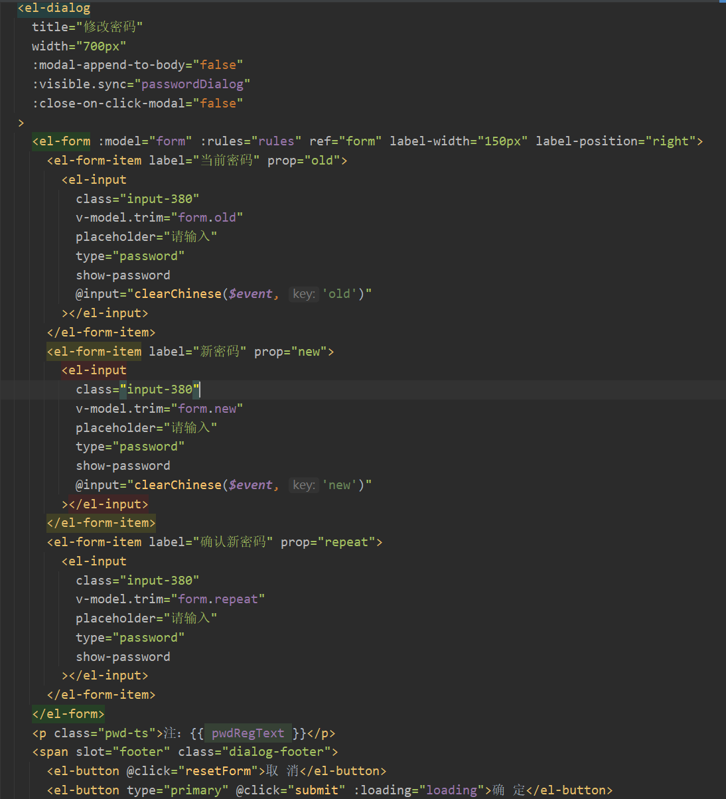
包括当前密码、新密码、确认新密码。并添加了校验规则：
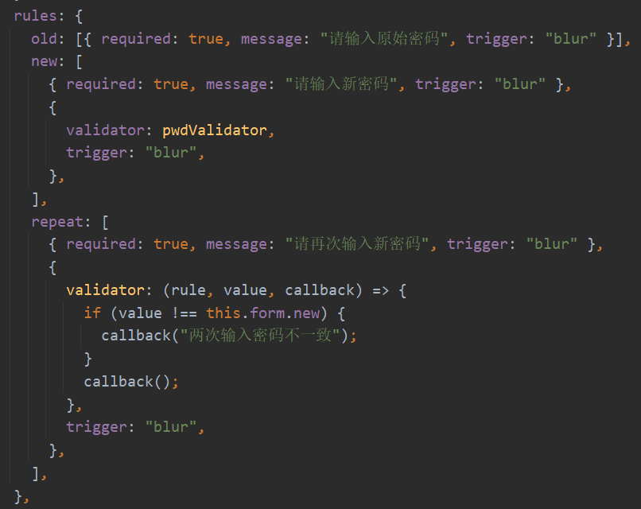
修改密码会调用/users/passwords/set接口：

同时初始化菜单权限，从后端获取authList，并判断是否有权限，没有权限的话跳转到登录页面：
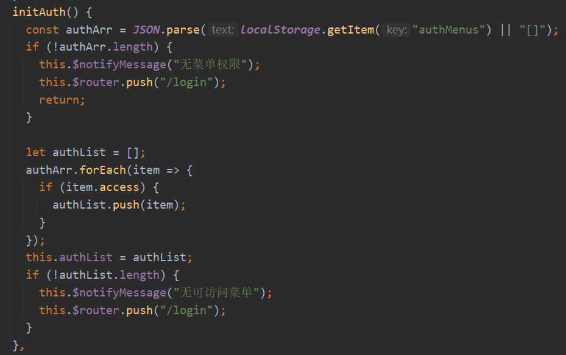
首页除了左上角 logo，顶部导航栏，右上角个人信息，还有一个重要的版块就是左侧菜单。由于有了顶部导航栏，左侧菜单如果也放到首页来写，由于层级关系会让代码显得很臃肿，所以菜单是放到每个子模块来做的。每个子模块有左侧菜单，也会存在很多重复容易的代码，为了复用，就抽成组件，放到components文件夹下：

用到了el-menu标签：
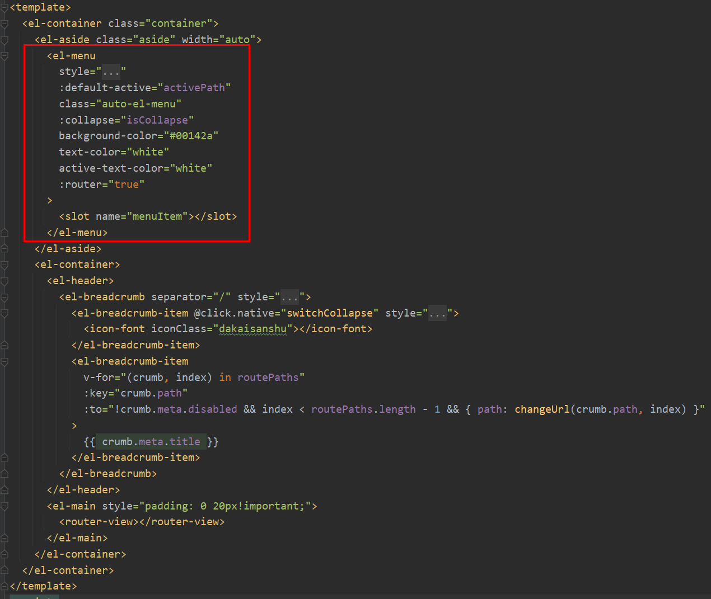
slot是个插槽，相当于挖个坑在这，用的时候填一下坑，类似于模板。然后用el-breadcrumb做了个面包屑，点击可跳转到相应路由。接着就把左侧菜单应用到后台管理模块上，新建views/console/index.vue：
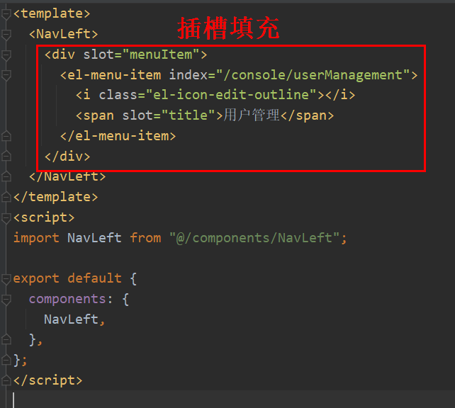
左侧菜单搞定了，右侧内容也是类似的，查询、表格、分页、增删改查，也需要抽成组件：
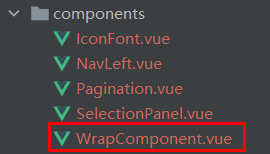

再新建views/console/userManagement.vue，编写用户管理代码：
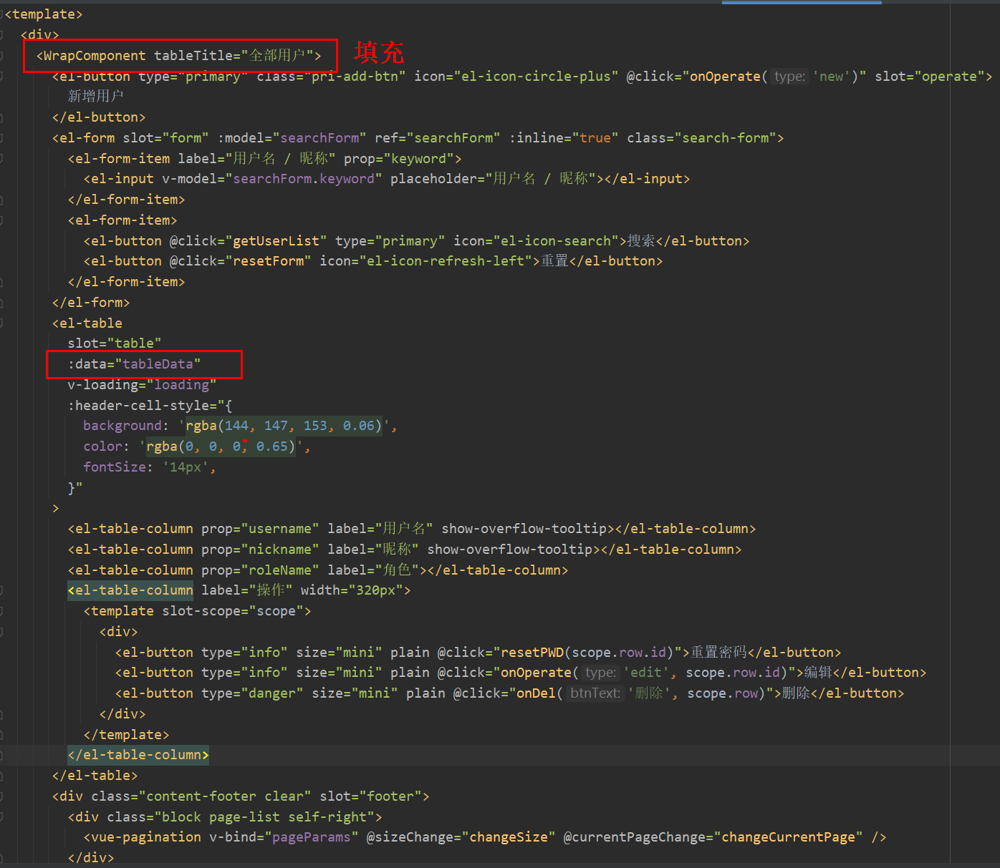
用到了el-form和el-table标签。表格数据通过:data绑定到了tableData对象，调用后端接口后，从响应中拿数据填充：
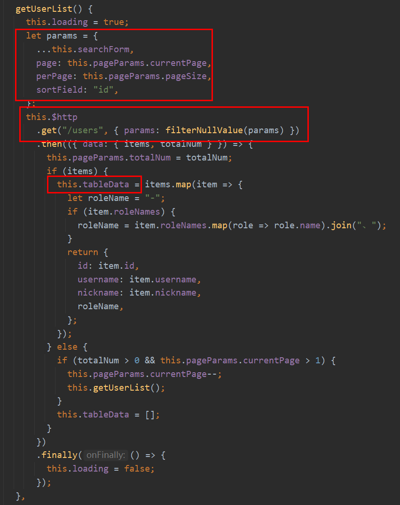
新增用户弹窗的入口也是放在这个文件中的：

dialogFormVisible默认为False不可见，点击新增按钮后，会设置为True。新建views/console/addUser.vue文件编写用户弹窗的代码：

用户管理userManagement.vue和新增用户addUser.vue这两个组件叫做父子组件，父组件如果想传值给子组件，需要通过props来实现：

watch能监视传值的状态，及时渲染。
watch不是必须的，等到做编辑用例和用例运行结果的时候，会更加体会到它的作用。
新增用户时，会对用户名和密码做校验：
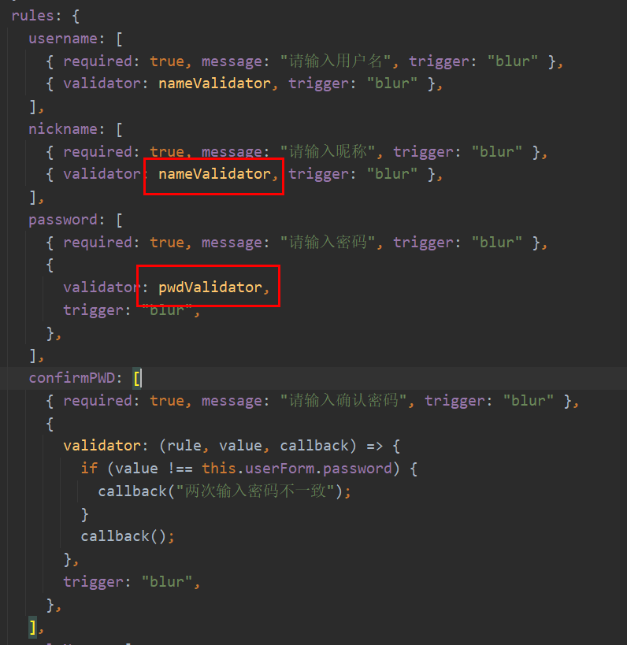
nameValidator和pwdValidator是公共方法，定义在utils/const.js文件中：
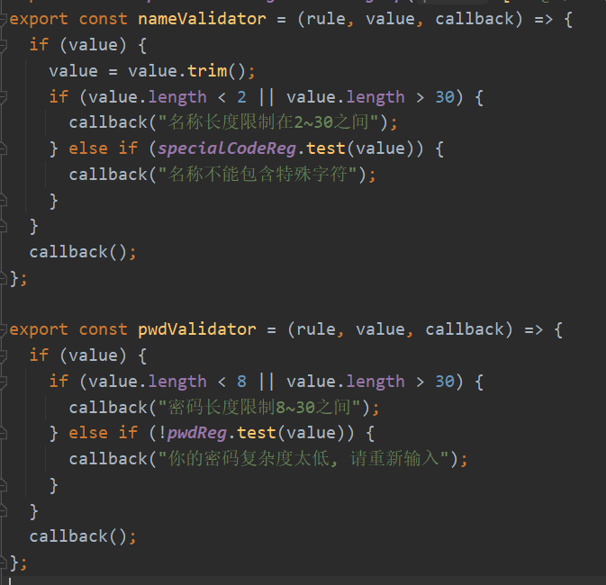
utils文件夹下还有个commonMethods.js文件，定义了一些公共js方法：

本次前端代码基本编写完成了：

最后还有个axios.js，它定义了异步请求实例：
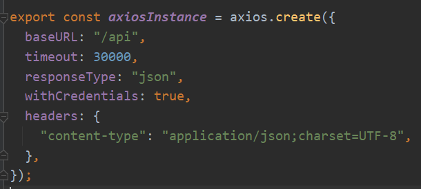
添加了一个请求拦截器：

校验header需要包括jwt请求头：Authorization: Bearer 。还添加了一个响应拦截器：
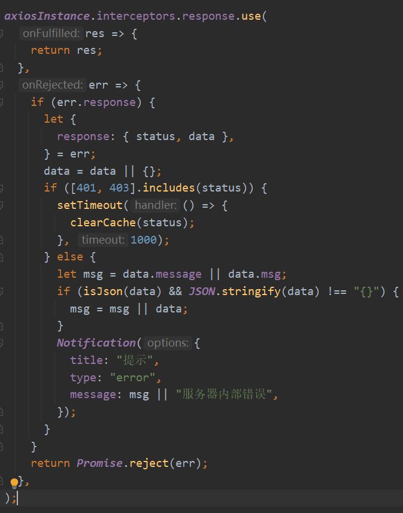
对错误信息进行捕获并弹框提示。
创建 Django 项目
安装 Django：
pip install --default-timeout=6000 -i https://pypi.tuna.tsinghua.edu.cn/simple django
创建teprunner-backend项目：
django-admin startproject teprunnerbackend
项目名字请随意。
注意这条命令的项目名字不能带短横线-，如果想用短横线，可以先去掉短横线执行命令，再手动改回来，外层这个名字对项目没有任何影响：
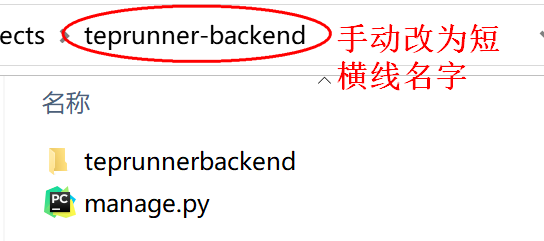
编写 Django 代码
安装依赖包：
pip install --default-timeout=6000 -i https://pypi.tuna.tsinghua.edu.cn/simple -r requirements.txt
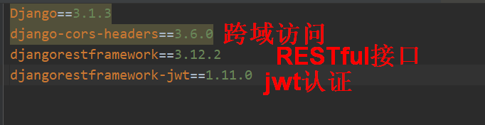
创建user应用:
django-admin startapp user

配置teprunnerbackend/settings.py:

django-cors-headers为 Django 提供了跨域访问的解决方案，需要配置ALLOWED_HOSTS为*，允许所有域访问，并注册INSTALLED_APPS和MIDDLEWARE。user应用也需要在INSTALLED_APPS注册后才会生效。继续改配置，把时区改为Asia/Shanghai：
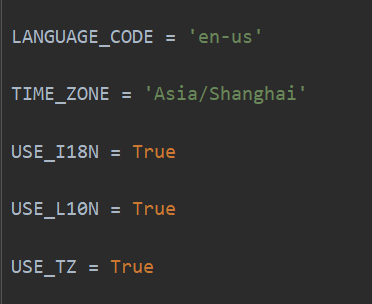
继续：
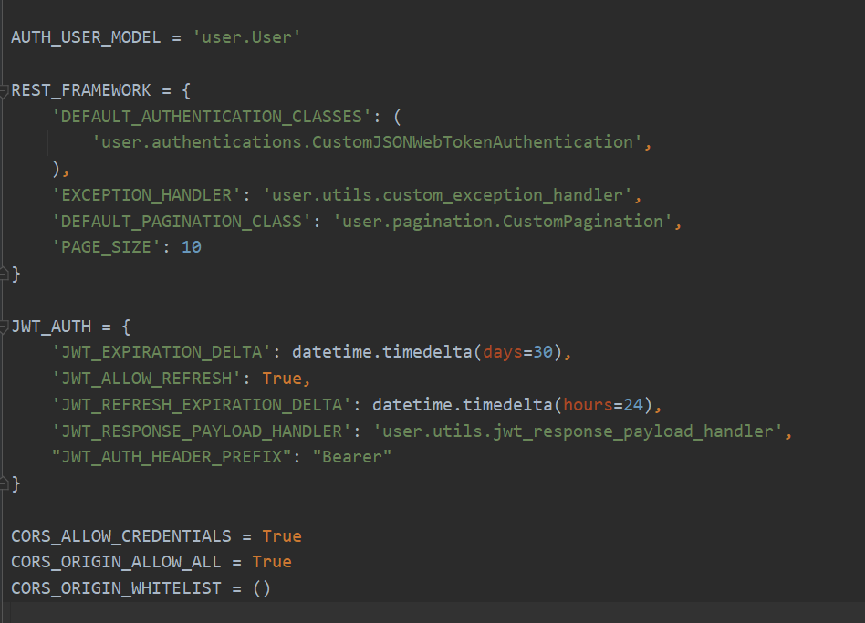
Django 自带了一个权限管理系统，为了简单一点，直接复用。不过需要对user表进行自定义改造，所以通过配置里面的AUTH_USER_MODEL指定为刚刚创建的user应用的User。REST_FRAMEWORK是 Django RESTful framework 的配置项，同样要进行自定义改造，所以这里通过配置DEFAULT_AUTHENTICATION_CLASSES指定认证鉴权类为CustomJSONWebTokenAuthentication，通过EXCEPTION_HANDLER指定异常处理函数为custom_exception_handler，通过DEFAULT_PAGINATION_CLASS指定分页类为CustomPagination。JWT_AUTH是jwt的配置项，定义了过期时间为 30 天，允许刷新，刷新间隔，响应处理，header前缀。最后补充了django-cors-headers的 3 个配置。
接着配置teprunnerbackend/urls.py：

把user的url都添加到api/users/下面。新建user/urls.py文件：

分别添加登录、用户增删改查、重置密码、角色列表、修改密码几个路径。Django 的视图有两个类型：类视图和函数视图。path()只接受可调用对象，所以类视图需要使用as_view()进行转化，比如views.UserLogin.as_view()。函数视图直接写上函数名就可以了，比如views.update_password。
打开user/models.py文件，添加数据模型：

model建立了代码和数据库的映射，这称为orm，对象关系映射。基础表定义了共有的created_at和updated_at字段。auto_now_add表示记录新增时间，auto_now表示记录更新时间，都是自动进行，无需手动写代码来处理。用户表继承了 Django 自带的AbstractUser，REQUIRED_FIELDS规定了哪些字段必填，username和password是隐式规定了必填的，不需要设置，默认email也是必填，这里把它去掉。
Django 默认表名会加上
django_前缀，使用Meta.db_table来定义没有前缀的表名。
model写完了，执行以下命令同步到数据库中，创建表结构：
python manage.py makemigrations
python manage.py migrate
打开SQLiteStudio，选择根目录的db.sqlite3文件：

看到表结构已经创建好了：

Role有个models.JSONField字段，为菜单权限JSON，使用 Django 的fixtures给项目添加初始化数据：

fixtures名字是固定的，就像 pytest 的conftest.py一样，只认这个名字。user.json存放数据：

包括管理员用户、角色权限、管理员角色对照关系。其中角色权限数据共 3 条：

auth里面定义了菜单，对应首页的顶部导航栏的栏目，比如本文只添加了后台管理。access表示角色是否有权限访问，只有管理员的这条数据，access为true。通过以下命令把这些数据写入数据库中：
python manage.py loaddata user
Django 会在
user.fixtures目录下自动找名字为user的.json、.xml或.yaml文件进行加载。
接着新建一个user/serializers.py文件写序列化的代码。Django 序列化是指，把数据库的数据转化为json返回给前端，反序列化是指把前端传过来的json写入数据库。先写登录的序列化器：

继承自serializers.ModelSerializer，一般需要在Meta定义两个属性，model指定相应的模型，fields指定所需要的的字段，这些字段就是json的key。图中的roleName不属于User表的字段，所以通过定义为serializers.SerializerMethodField()，再定义get_roleName()方法来取。serializer写好后，写视图，编辑user/views.py：

由于是jwt认证，所以这里继承了JSONWebTokenAPIView，提取请求参数，check_password()简单校验了下请求的密码和数据库的密码hash值是否相等，后面的代码是JSONWebTokenAPIView.post方法现成的，重写了一遍。ErrInvalidPassword等是在user/errors.py定义的错误响应：

这样可读性会更高。响应状态码也建议这么写
status=status.HTTP_500_INTERNAL_SERVER_ERROR，from rest_framework import status已经定义好了所有状态码的常量。
新建user/utils.py文件，编写jwt_response_payload_handler来定义登录接口的响应结构：

返回token、user、auth三个字段。custom_exception_handler规范了一下异常响应信息。这 2 个方法都是在settings.py中的REST_FRAMEWORK配置过的，还有一项配置是分页，新建user/pagination.py文件：
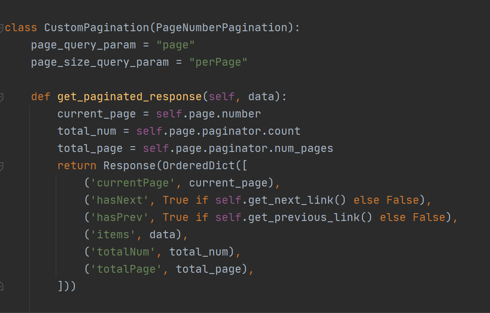
继承了PageNumberPagination，指定了查询参数名page、perPage，自定义了响应字段名currentPage、items、totalNum、totalPage，并添加了 2 个字段hasNext和hasPrev。
最后还有一个配置项，自定义认证鉴权，新增user/authentications.py：
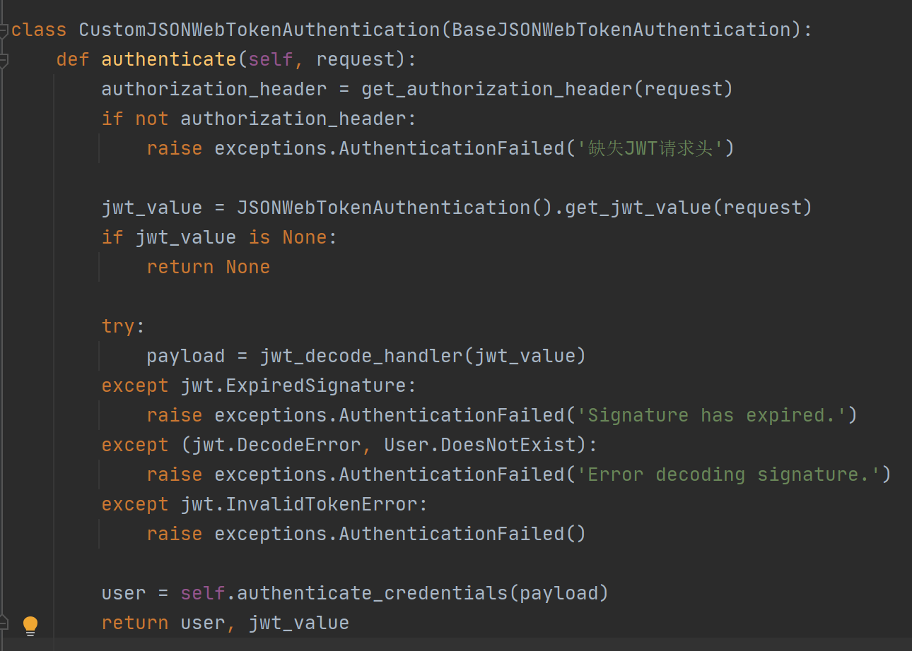
继承了BaseJSONWebTokenAuthentication。通过get_authorization_header提取请求头中的Authorization字段，没有就提示“缺失 JWT 请求头”。后面的代码是父类现成的。
至此，整个后端基本代码都写完了，jwt认证也做好了：

后面的代码就集中在serializers.py和views.py两个文件，序列化器提供数据库表字段和响应json的序列化和反序列化，视图使用序列化器，编写业务处理代码。按照这个思路，编写用户的增删改查功能，先在serializers.py文件中写 2 个序列化器UserCreateSerializer和UserPagingSerializer：

由于新增用户和用户列表展示的字段不一样，所以给同一个User模型创建了 2 个序列化器。图中标红了代码是把int的id值转化为了str类型，方便前端处理。is_staff表示是否为管理员，这个名字是 Django 定的。再写views.py：

GenericViewSet是 Django REST framework 提供了超级封装的类视图，一般不需要重写，给queryset和serializer_class赋值就可以了。不过因为有些自定义规则，所以本项目进行了复写。permission_classes指定了接口访问权限，IsAdminUser表示必须管理员才能访问，也是 Django 定义好的，和前面的is_staff相对应：
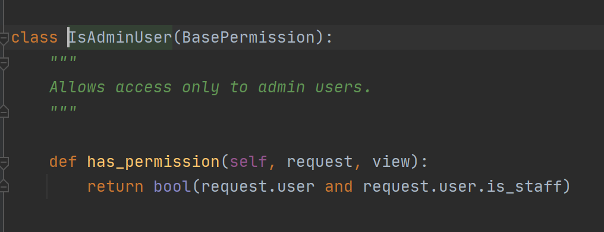
类似的，我在user/permissions.py新建了个IsTester，用来控制某些功能只能测试使用：
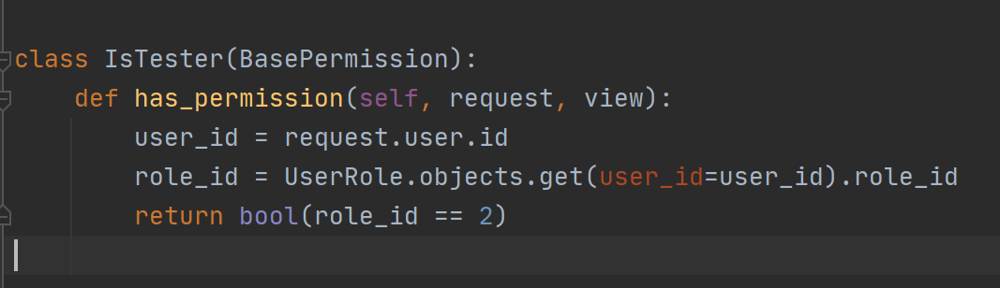
本文还用不到这个。
重写查询用户列表list方法：
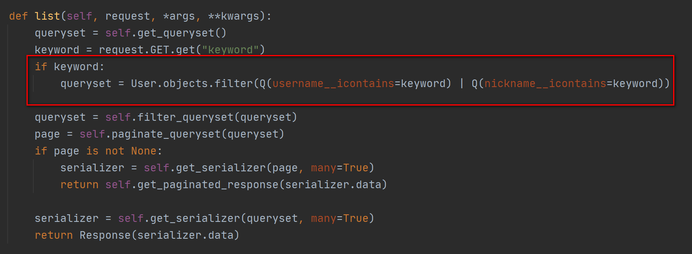
增加username和nickname的模糊查询。
重写新增用户create方法：
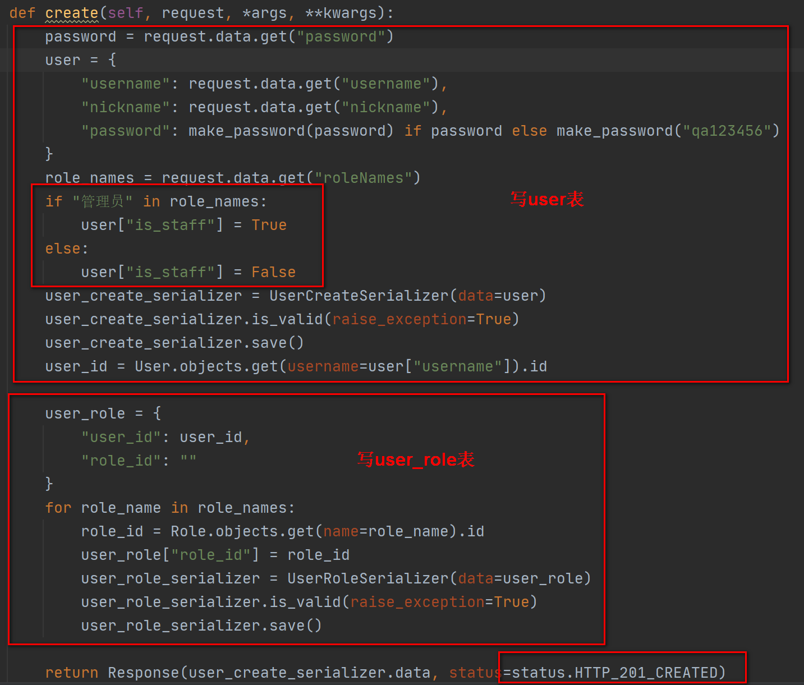
首先写user表，根据角色名是否包含管理员，判断是否写is_staff字段，接着用入库后产生的user_id写user_role表。注意最后一行的status，新增的话，状态码返回201。
重写修改用户的put方法：
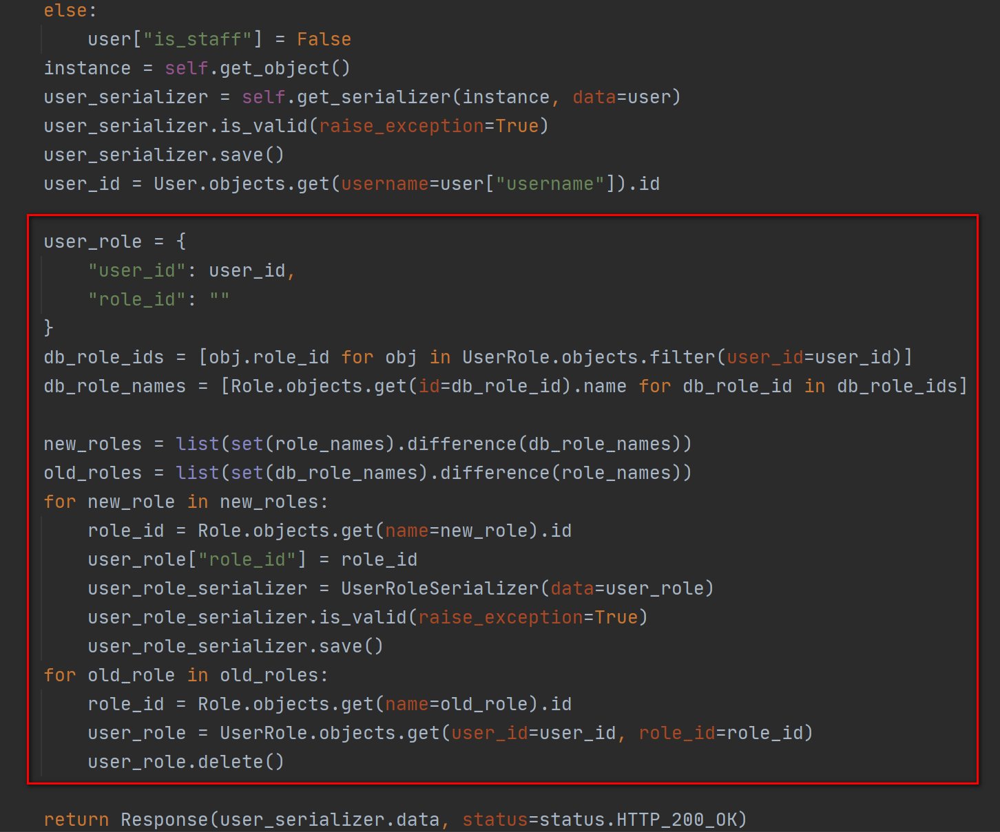
和新增用户的区别在于，更新user_role表数据时，需要根据老角色和新角色，比较差异后，添加新增的，删除废旧的。
重写删除用户的delete方法：
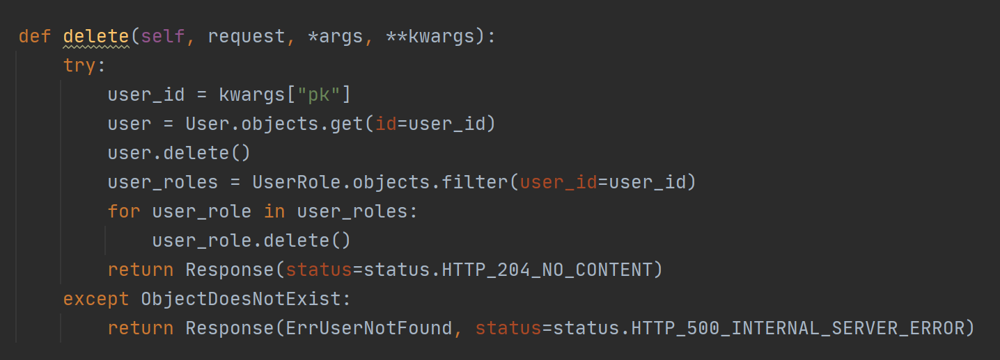
同时删除user表和user_role表。注意最后一行的status，删除的话，状态码返回204。
另外还自定义了user_detail方法，返回单个用户信息：

GenericViewSet的这些请求方法在user/urls.py文件中配置映射关系：

<int:pk>定义了url中的整形参数，pk为变量名，通过kwargs["pk"]来取。
在新增用户的时候，需要从角色列表中选择角色，需要后端提供这样的接口，使用ListAPIView：
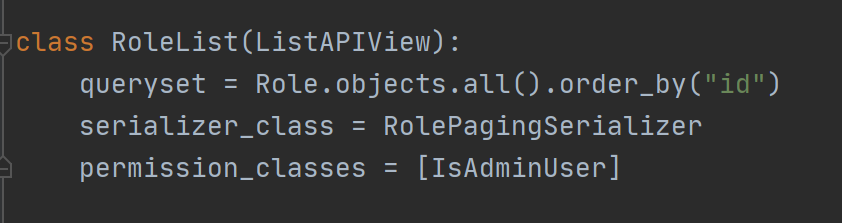
4 行代码搞定一个接口，这就是 Django 的好处，除了ListAPIView，还有CreateAPIView、RetrieveAPIView、ListCreateAPIView等，按需取用。
密码重置接口用APIView来实现：
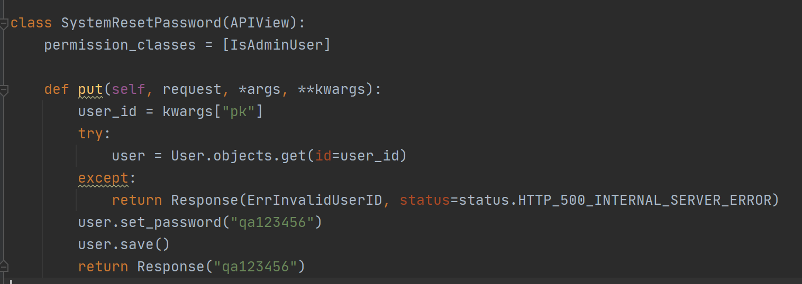
定义了put方法，从请求url中获取参数值user_id，查询user对象后，调用预置的set_password方法，把密码重置为qa123456。记得调用user.save()把数据更新到数据库。
除了类视图，Django 也提供了函数视图，并且 Django REST framework 提供了函数视图的方法装饰器，可以像flask框架一样，感受写纯后端接口的体验，按这个方法来写修改密码接口：
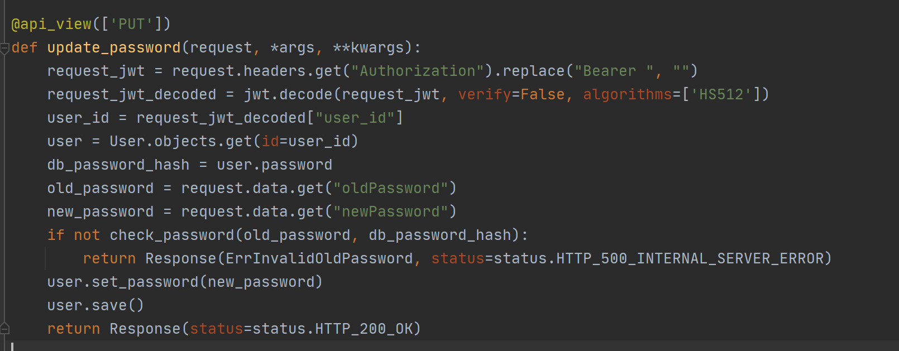
@api_view(['PUT'])是 Django REST framework 提供的方法装饰器。修改密码时，会对jwt进行解码，获取到user_id，然后检查老密码是否和数据库中的密码hash值一致。
前后端联调
根据以上思路把前后端的代码写完以后，就可以把项目跑起来看看效果了。先启动 Django 项目：
python manage.py runserver
接着启动 Vue 项目：
npm run serve
访问：
http://localhost:8080/
就能看到登录页面了，默认超管用户名为admin，密码为qa123456，登录成功后可以尝试走一遍功能检查下：
- 点击左上角 logo，不会出现跳转到空白页。
- 点击右上角信息，弹出下拉菜单，分别有修改密码、个人信息、退出登录。
- 点击退出，返回登录页，重新登录。
- 查询右上角个人信息，包括用户名、昵称、角色。
- 通过右上角下拉菜单修改密码，和老密码不匹配会提示修改失败，填写正确信息会修改成功，自动跳转到登录页面重新登录。输入老密码登录失败，输入新密码登录成功。
- 新增用户，保持默认密码，新增成功后，用
qa123456登录成功。 - 新增用户，选择自定义密码，新增成功后，用
qa123456登录失败，用自定义密码登录成功。 - 新增用户，分别创建管理员、开发、测试 3 个角色用户。
- 使用新用户登录，管理员用户能登录成功，开发和测试由于没有后台管理权限，点击登录接口后会提示“无菜单权限”。
- 修改用户，修改用户名、密码，修改测试角色用户为管理员角色，重新登录，能看到用户名、密码已更新为修改后的用户名、密码，并且管理员角色生效，能登进去看到后台管理功能。
- 输入用户名或昵称，点击搜索按钮，测试模糊查询功能正常，重置后清空搜索框，自动查询一次列表。
- 点击删除按钮，提示是否确认删除，确认后删除成功，检查数据库
user_role表数据也被清理干净。 - 切换分页，刷新列表，选择不同分页条数，正常计算显示相应的分页总数。
- 找到自定义密码的用户，点击重置密码，重置成功后，重新登录，使用自定义密码登录失败，使用默认密码
qa123456登录成功。 - 点击左侧菜单旁边的面包屑按钮，能收起和展开左侧菜单。
由于时间关系，目前还没有做角色管理功能，角色通过后端 Django 的
fixtures/user.json进行数据初始化。
Postman 搭建 Mock Server
在写前端代码过程中，后端还没有写好，可以找一个服务模拟后端，提供响应数据进行前端调试，这项技术叫做 Mock，这个服务称为 Mock Server。Mock Server 可以使用 JavaScript 的mock.js来搭建，也可以使用 Python 的FastAPI ，不嫌麻烦用Spring Boot或者Nginx做一个也可以。不过为了方便起见，选择上手就能用的可以省不少心。一些网站会提供在线 Mock 服务，在网站上填写url和response body，有个缺点是我找了一圈都没有发现能设置响应状态码的，比如在调试axios.js的响应拦截器时，就需要根据404、500来进行调试，看效果。寻寻觅觅，发现平时都在用的 Postman，直接可以做 Mock Server。首先登陆 Postman，只有登陆后才能使用这个功能：

可以选择用 Google 账号登陆，也可以注册一个。点击左上角+ New：

选择Mock Server。依次填写请求方法、请求路径、响应状态码、响应体：

点击表格右上角的三个点还能添加请求体和接口描述：

接着点击下一步：

填写 Mock Server 的名字为hello，其他选项默认，点击Create Mock Server进行创建：
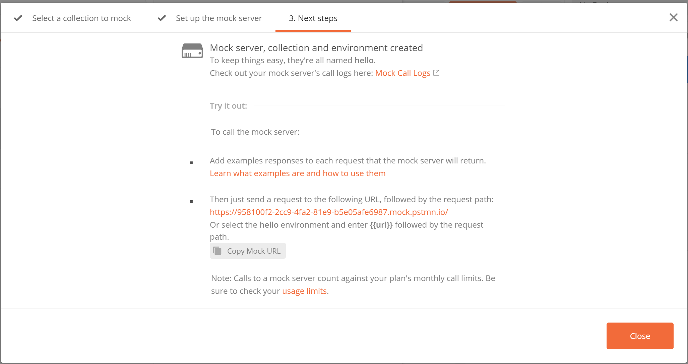
关闭后，Mock Server 就建好了：

接着从左侧Collections中找到这个接口，点击打开：

此时还不能发送请求，需要在右上角选择环境hello：

发送请求成功：

其中url是隐藏了的，点击右上角环境旁边的眼睛图标查看：
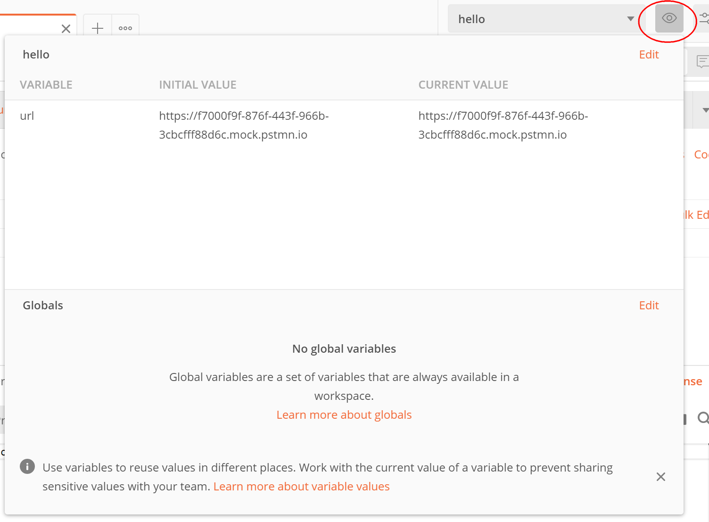
修改已创建接口 mock 数据的入口在Examples：
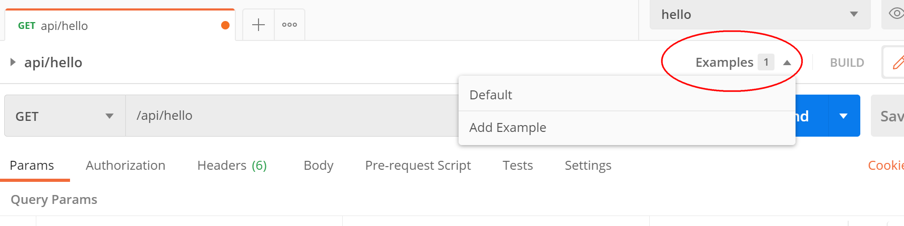
点击Default：
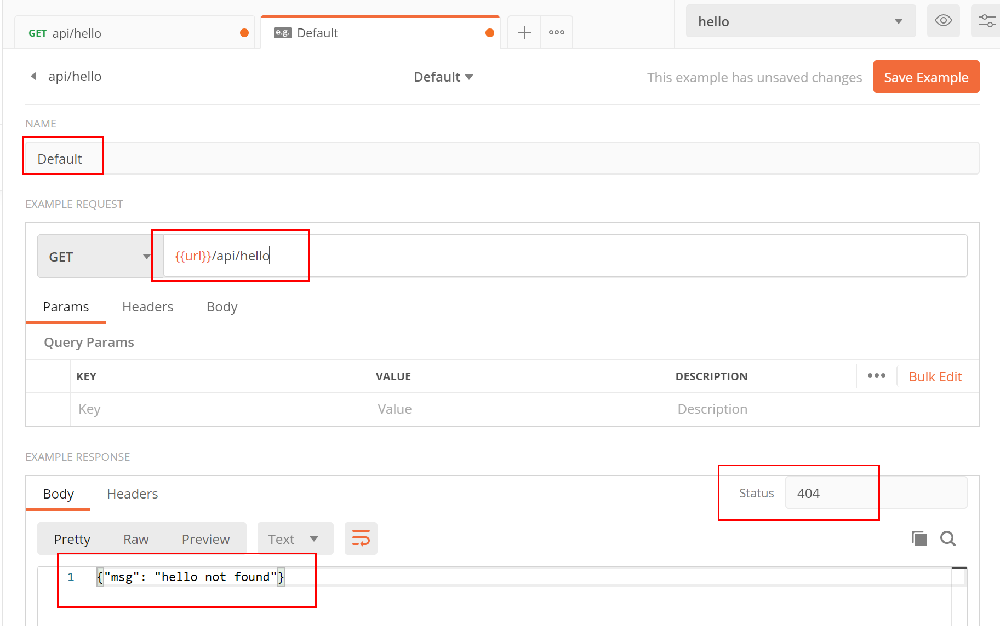
提供了新增时更直观的操作界面，比如我把响应状态码改成了404，响应体改成了{"msg": "hello not found"}，点击右上角Save Example保存后，再次请求：

实际 mock 的状态码和响应体也更新了。
小结
本文是学习版 pytest 内核测试平台开发的入门篇，内容比较充实，全文字数上万，一共截了 103 张图，借助FastStone Capture这个小工具，还算轻松，希望能让读者更直观的看到平台功能和代码逻辑。“编写 Vue 代码”和“编写 Django 代码”2 个小节的内容是一气呵成写完的，没有做修改，怕改了之后反而影响行文思路，不够畅快。前端项目参考了一些开源项目如Tcloud、FasterRunner等，把代码看懂后，自己重新组织了代码和规范，在调试过程中，也学会了写 Vue，做学习版teprunner时就从头写了一遍。后端代码完全是我自己写的，先学了一遍 Django 和 Django REST framework 官方教程，其中《Django 认证系统并不鸡肋反而很重要》这篇文章在腾讯云+社区 2020 年度征文活动中，被评选为了最受喜爱作者奖，如果对 Django 认证系统不是很清楚的话，可以看看。最后，个人水平有限，有错误或不足之处，还请见谅。虽然测试平台不一定能完全落地，但是做一遍开发对能力的提升是极大的。teprunner并不算优秀平台，和真正企业级项目比起来，就是个小玩具。如果能博君一乐，也算是体现价值了。
参考资料：
源码前端 https://github.com/dongfanger/teprunner-frontend